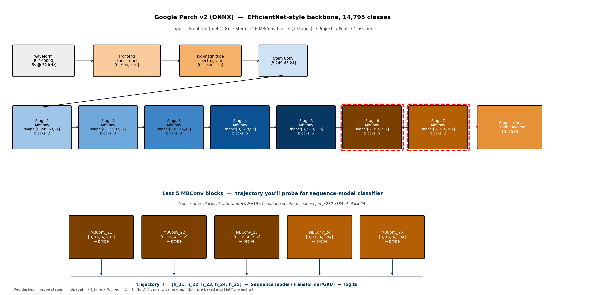
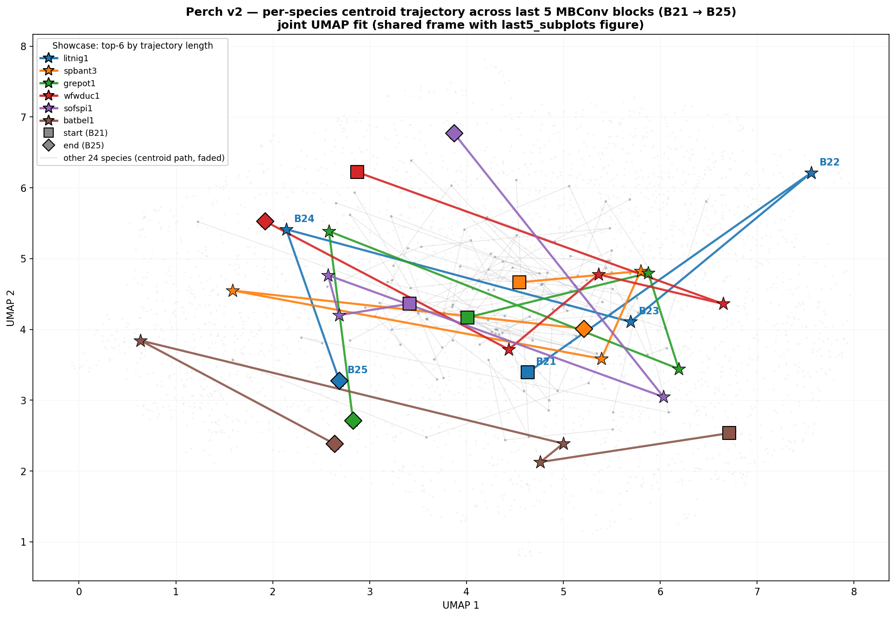
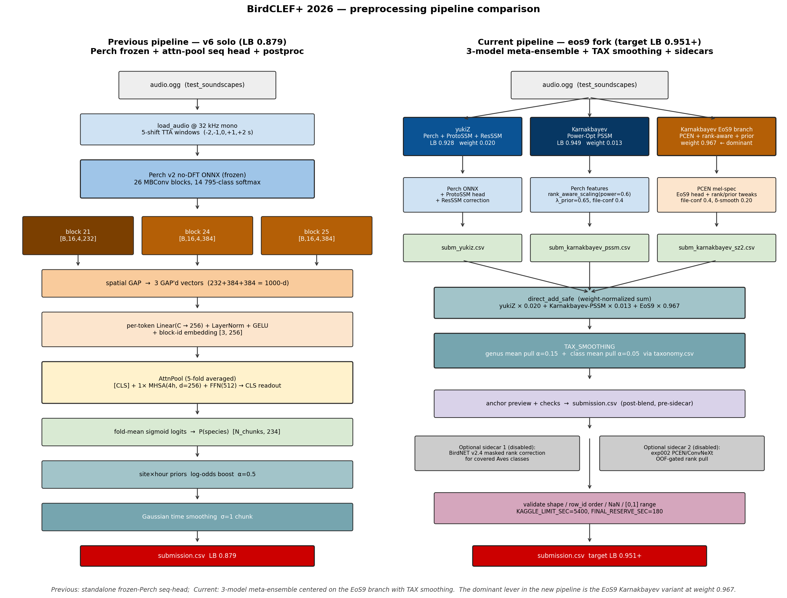

BirdCLEF+ 2026: A Per-Block kNN Probe, a Tiny Sequence Head, and a Bronze Medal
A two-week sprint on BirdCLEF+ 2026 — Cornell Lab's flagship bird-sound competition — wrapped up with an official Kaggle Competition Bronze Medal: rank 354 / 4084 (top 8.7%), public LB 0.950, private LB 0.942, and a +590-place jump going from public to final standings.
📄 Read the paper: birdclef-2026-working-note.pdf (drafted for LifeCLEF 2026 working notes, CEUR-WS)
💻 Code: github.com/rockerritesh/BirdCLEF2026
🥉 Certificate: BirdCLEF+ 2026 — Bronze Medalist
This post is the short, opinionated version of the working note. The full PDF has the maths, the architecture diagrams, and the postmortem of nine final-week ceiling attempts.
The task in one paragraph
234 South-American bird species. 5-second audio chunks. Multi-label classification scored by macro-AUC. CPU-only inference with a hard 90-minute runtime cap on the hidden test set. Roughly 4 GB of labelled training audio, plus a small set of partially-labelled soundscape recordings that introduce the real domain shift.
The held-out test data is from the Pantanal (Brazil/Bolivia/Paraguay). Most labelled training clips are not — that mismatch is the whole game.
Why I didn't train a model from scratch
The compute economics are bad. The CPU-only inference cap is forgiving; the training side isn't, since I had only a laptop and limited GPU time. Google's Perch~v2 vocalization classifier was already trained on ~14,795 bird classes across millions of clips. Using its features and training a tiny head on top is dramatically cheaper than fighting EfficientNet/ConvNeXt from random init.
The catch: when a frozen backbone is pretrained on a much wider distribution than your downstream task, the last block is often the wrong place to tap. It's the most over-specialised to the pretraining classes.
The methodology contribution: a per-block kNN probe
Perch~v2 is a stack of 26 MBConv blocks (EfficientNetV2-style) followed by a global pool and a 14,795-way softmax. From the outside it's a black box — no documentation on which block carries the most species-discriminative signal for a different set of birds.

Before training any sequence head, I ran a tiny probe:
- Pick 30 species at random, grab
20 clips each (600 audio clips total). - For each MBConv block, extract its features and global-average-pool to a vector per clip.
- Score each block with 5-nearest-neighbour top-1 accuracy on this 30-species toy task.
The whole thing takes minutes on CPU. It's not a model — it's a layer-selection signal. Results:
| Block | 5-NN top-1 |
|---|---|
| 24 (penultimate MBConv) | 0.648 |
| 25 (final MBConv) | 0.595 |
| 21 | 0.555 |
| 23 | 0.490 |
| 22 | 0.478 |
The penultimate block beats the final one. That's not the conventional wisdom — most transfer-learning recipes default to the last representation. The probe predicted, before any training, that I should weight block 24 higher than block 25.
Here's what those blocks look like in UMAP-projected feature space — species cluster much tighter at block 24:

When I later trained the sequence head end-to-end, its learned softmax weights independently confirmed the same ranking: block_24 → 0.47, block_25 → 0.40, block_21 → 0.13. The probe, run in a few minutes on 600 clips, predicted what a multi-hour training run would arrive at.
This is the bit I think is genuinely transferable: before fine-tuning, probe. It's cheap, fast, and tells you which layer of your frozen backbone is actually useful for your downstream task.
The sequence head
The head itself is intentionally small (~430k params):
- Take features from blocks 21, 24, 25 — three tokens.
- Add a learned [CLS] token.
- One transformer block of attention pooling.
- Linear projection to 234 classes.
Frozen backbone everywhere; only this thin head trains. Training is BCE on labelled clips mixed with soundscape augmentation at 20%.
Standalone progression:
| Version | LB | What changed |
|---|---|---|
| v1 scalarmix (focal-only) | 0.816 | softmax-weighted block sum + linear head |
| v4 attn (+ 20% soundscape) | 0.862 | attention pool overtook scalarmix once cross-domain data was added |
| v5 + 3-shift TTA | 0.867 | ±1s windows |
| v6 + 5-TTA + α=0.5 site/hour priors + σ=1.0 Gaussian | 0.879 | the standalone ceiling for this approach |
About +0.06 LB comes from postprocessing alone: 5-shift test-time augmentation, site × hour log-odds priors from train_soundscapes_labels.csv (a Pantanal-conditional prior on which species you'd expect), and Gaussian smoothing across the 12 chunks of each file. None of these touch the model — they exploit the structure of where and when a recording was made.
A v7 with α=1.0 priors regressed to 0.861. The sweet spot for prior strength sits below ~0.5; push it harder and you over-commit to a prior that doesn't quite match the hidden Pantanal sites.
The blend that got the medal
A bronze-zone score doesn't come from a single model. It comes from blending. The dominant ingredient was Karnakbayev's public Power-Optimization ProtoSSM/SED chain (LB 0.949) — an exceptionally strong public baseline. My sequence head provided diversity at small weight:
eos7-ours-blend (Public LB 0.950, Private LB 0.942)
├─ Karnakbayev power-opt ProtoSSM/SED (LB 0.949) weight 0.93
├─ Our v6 Perch seq-head (LB 0.879) weight 0.07
└─ TAX_SMOOTHING (taxonomy.csv, genus α=0.15, class α=0.05)
The TAX_SMOOTHING postproc — blending each class's logit with its genus and family averages from the taxonomy file — added the final +0.001 over a 0.949 starting point. That sounds tiny. But in this competition the 0.950 plateau held 757 teams by the deadline, all tied at exactly that 3-decimal-rounded score. Without TAX_SMOOTHING we'd have been in the pack; with it, the rank-aware tie-break put us above it.

The public → private rerank
This is the most interesting graph of the competition. The public LB shows a giant flat shelf at 0.950 (757 teams). The private LB does not.
| Public LB | Private LB | Δ | |
|---|---|---|---|
| eos7 blend (final) | 0.950 | 0.942 | $-$0.008 |
| v6 standalone | 0.879 | 0.898 | $+$0.019 |
| v4 pseudo-trained | 0.870 | 0.893 | $+$0.023 |
| v7 stronger priors | 0.861 | 0.890 | $+$0.029 |
Every standalone submission scored higher on private than on public. The blend lost a hair. The interpretation:
- Public-LB chasers on the 0.950 plateau over-fit to whichever stack of post-processing tricks landed exactly there. On the held-out 70% (different sites, different hours), most of them lost 0.010–0.020.
- The dominant Karnakbayev model in our blend is robust — it lost only 0.008.
- Our small standalone heads, with their conservative priors, generalized cleanly. They didn't peak high on public, but the rank discipline they encode held up.
Net result: rank 944 (public) → 354 (final certified), a +590-place jump. That's the entire ball game.
Negative results worth recording
A working note isn't honest without these. Nine final-week attempts to break past the 0.950 plateau, all of which failed or tied:
- Pseudo-labelling. Self-trained on 333 unlabelled soundscape files (3,996 chunks) with a 5-fold teacher. OOF metric jumped +0.134 (0.7654 → 0.8998); standalone LB regressed −0.009 (0.879 → 0.870). Textbook OOF-inflation from teacher self-reinforcement.
- Residual seq-head training (target
h_block25 − h_block24instead of raw label). Same OOF gain pattern, didn't move LB. - DINOv2 224 px integration. The 224 px checkpoint was stronger than the 196 px one but still too weak (LB 0.811) to lift the blend above the 0.950 round-down.
- Aggressive prior strength ($\alpha = 1.0$ with $\sigma = 1.5$ Gaussian smoothing). −0.018 LB.
- BirdNET v2.4 sidecar in rank-space. Tied at 0.950, didn't break it.
The pattern is consistent: when you're already on a 757-team plateau set by rounding at three decimal places, the only way to actually break above it is a second model with standalone LB ≥ 0.94, not just diversity. We didn't have one. Distilling Perch into a smaller CNN with KLD loss (the path Tucker Arrants and EliKal hinted at on the discussion forum) is the obvious next step — multi-day GPU work, outside this competition's window.
On AI-assisted engineering
The whole sprint was done with Claude (Opus 4.7 / Sonnet 4.6, including a 1M-context build for the long-running session) as an engineering partner. What worked:
- Per-block probe code synthesised directly from a verbal description, including UMAP plots and the cluster-quality metric.
- Kaggle CLI gotchas debugged in real-time — the
KGAT_token uses Bearer auth, not Basic; old kernel versions are not accessible viakaggle kernels output(only the latest), so we had to manually web-download theaa9dde67224 px DINOv2 checkpoint. - Notebook hot-patches for the blend cell — the dominant Karnakbayev notebook hardcoded
solutions['Models'][1]['xSED'], expected_runSED_oncefrom outer scope, and only knew'direct'/'rank.1'dispatch types. Surfacing and fixing those took ~10 minutes with Claude.
What didn't work, and which is worth flagging:
- OOF-metric chasing is dangerous. The pseudo-label experiment showed an OOF gain that didn't transfer; Claude (and I) initially treated the OOF number as ground truth. The fix is to always cross-check with a real LB submission before scaling up.
Everything LLM-assisted is disclosed in the paper per the LifeCLEF / CEUR-WS GenAI declaration policy.
What I'd do differently
In rough order of expected payoff for next year's BirdCLEF:
- Perch → CNN distillation via KLD loss to a B0/B3 backbone. The community estimate is +0.02 to +0.04 standalone. That's the only realistic path to a second model strong enough to break a 0.950-rounding plateau.
- Confidence-gated pseudo-labels (Anil Ozturk's hint on the discussion forum) — single-pass with strict thresholds, not the multi-fold teacher I used.
- Spatial-per-block tokens ($T = 192$ instead of $T = 3$) so the head can attend to time–frequency regions, not just blocks.
- Properly retrain DINOv2 at 224 px instead of trying to salvage a checkpoint at the last minute.
Summary
- Final certified rank 354 / 4084 (top 8.7%) — 🥉 official Kaggle Competition Bronze Medal awarded 2026-06-04.
- The methodology contribution is the per-block kNN probe: a cheap, training-free way to choose which layer of a frozen backbone to tap for transfer.
- A small ($\sim$430k params) attention-pool sequence head over Perch~v2 features hit standalone LB 0.879; the medal came from blending with the dominant public baseline.
- Standalones generalised; blends overfit to public. The +590-place public → final rerank is the punchline.
- Code is public at github.com/rockerritesh/BirdCLEF2026; the full working note is on sumityadav.com.np/files/birdclef-2026-working-note.pdf.
If you're running BirdCLEF 2027 or any similar bioacoustics / fine-grained-audio task: probe before you fine-tune. The penultimate block of a wide-pretraining classifier is, more often than the literature implies, the right place to tap.
Cite this post
Auto-generated. Verify for your institution's requirements.